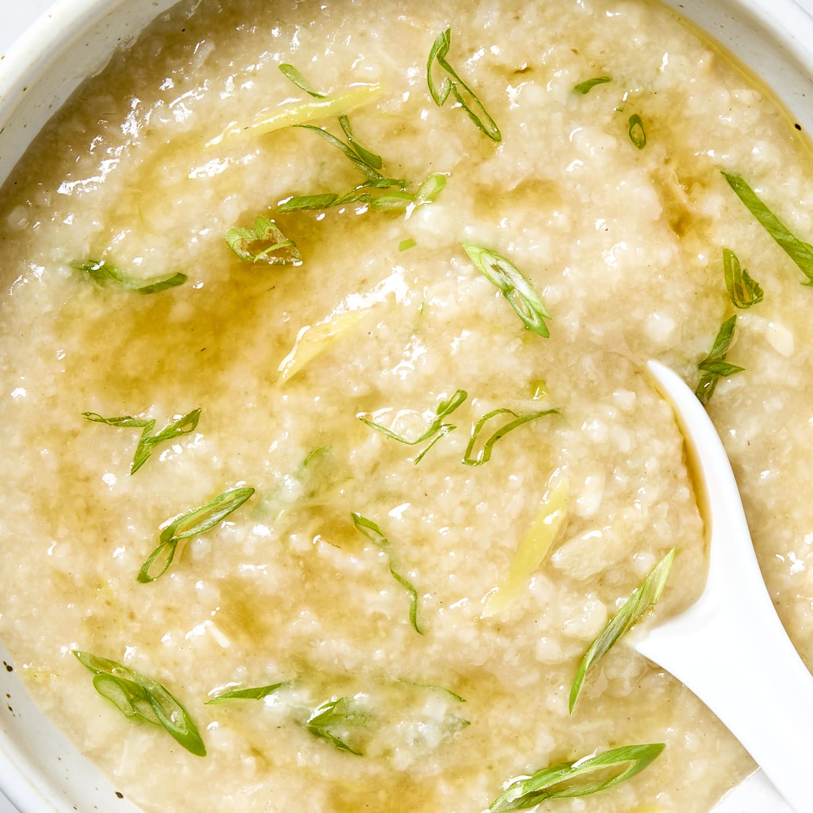

Recipe for Congee

is incredibly simple at its core—just rice and lots of water—but it is slow-cooked until the grains break down
into a silky, creamy porridge.
Here is a basic stovetop recipe for a savory, flavorful congee base, along with popular topping ideas.
Ingredients
- 1 cup of rice
- 8 to 10 cups of water
- optional to replace it with broth for more flavor
- 1 large slice of ginger
- pinch of salt or a splash of soy sauce
Step by step guide:
- Rinse the rice
- Put it on a cooker or rice cooker
- Fill it with water or broth
- add the slice of ginger in the broth
- turn on the heat to medium
- let it cooked about 20 minutes
- plate your plate, and is ready to eat